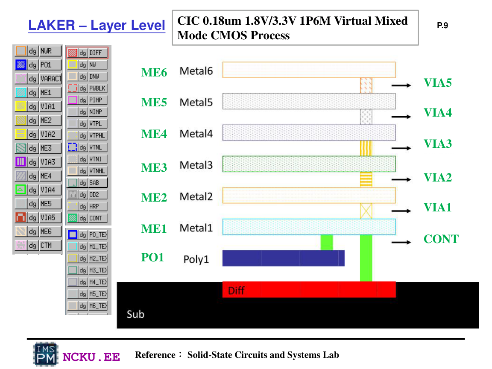
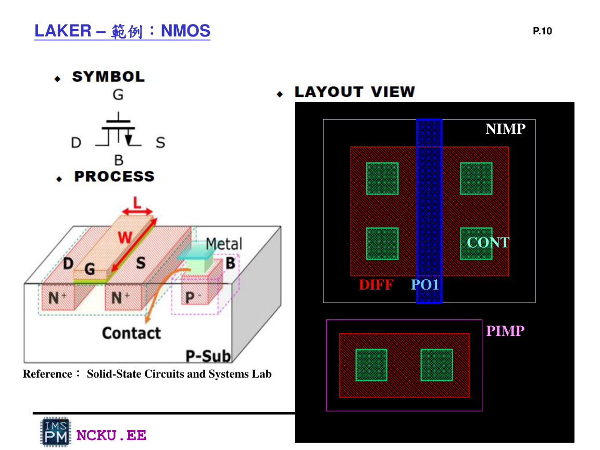
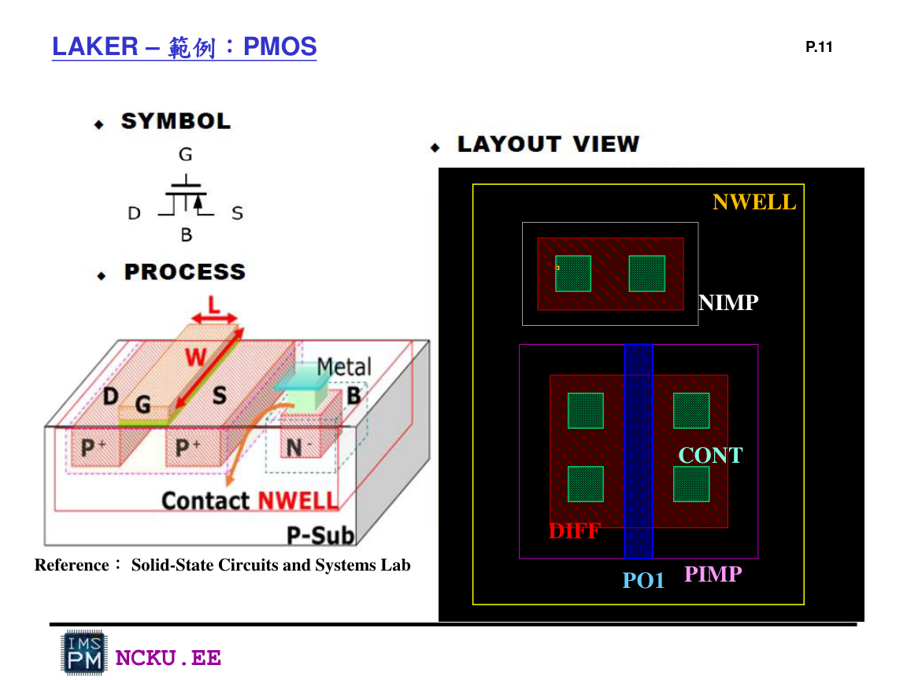
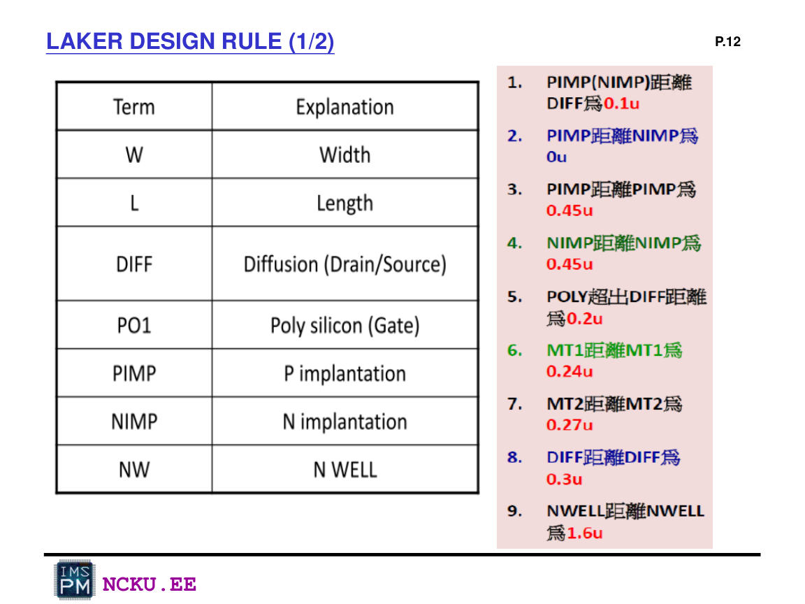
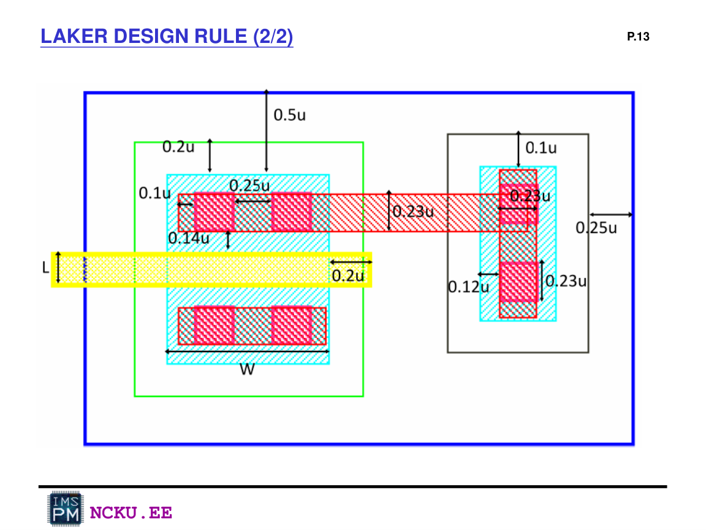
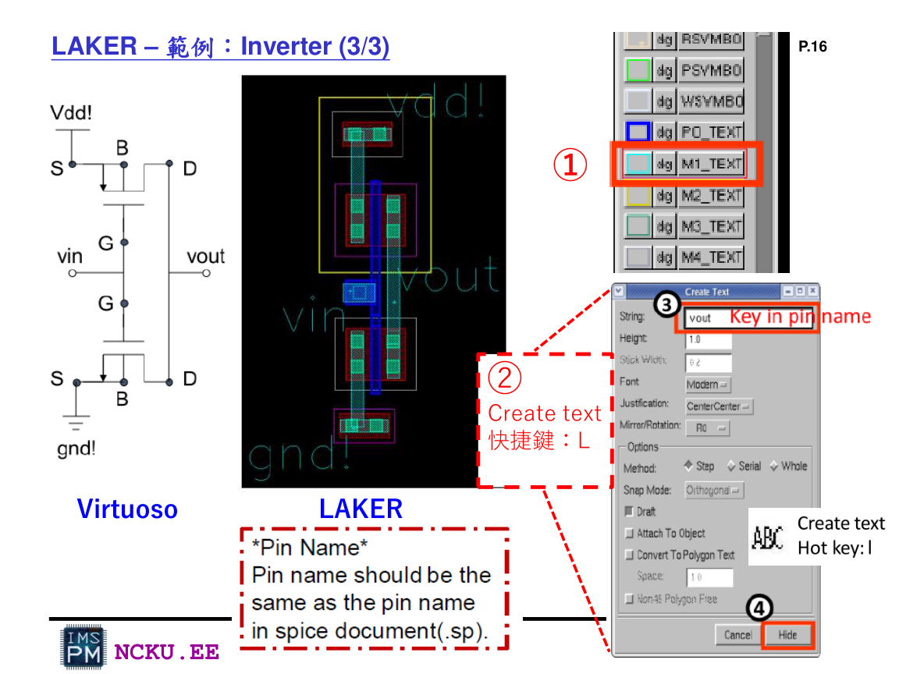

NAND / NOR Layout 製作流程
Lab9 要畫出 NAND 與 NOR 的 layout。layout 不只是畫圖，而是把 transistor、contact、metal、implant、well 都用正確幾何規則呈現。
Layer 概念
在 CIC 0.18um 1P6M process 中，常用圖層包含 DIFF、PO1、CONT、ME1、NWELL、PIMP、NIMP 等。PO1 通常形成 gate，DIFF 形成 source/drain，CONT 連到 metal，ME1 走線。

Lab9_Laker p.9：CIC 0.18um layer level，ME1~ME6、CONT、VIA、PO1、DIFF 等

Lab9_Laker p.10：NMOS layout 範例，包含 NIMP、DIFF、PO1、CONT

Lab9_Laker p.11：PMOS layout 範例，PMOS 需放在 NWELL 中，包含 PIMP、DIFF、PO1、CONT
NAND 與 NOR 拓樸
尺寸規格
| 邏輯閘 | MOS Type | W/L | 版圖提醒 |
|---|---|---|---|
| NAND | PMOS | 1u / 0.18u | PMOS 並聯，兩顆 source 通 VDD，drain 可接 output |
| NAND | NMOS | 0.5u / 0.18u | NMOS 串聯，中間節點不要誤接 output 或 GND |
| NOR | PMOS | 1u / 0.18u | PMOS 串聯，中間節點需正確 |
| NOR | NMOS | 0.5u / 0.18u | NMOS 並聯，任一輸入為 high 可下拉 output |
Design Rule 與量測
畫 layout 時要遵守 width、space、extension、overlap、enclosure 等規則。若距離不足，DRC 會報錯並 highlight 違規區域。

Lab9_Laker p.12：常見 design rule 名稱與部分距離規格

Lab9_Laker p.13：版圖規則尺寸示意圖
Pin Text 命名很重要
Layout 的 pin name 必須與 spice / testbench 的腳位名稱一致。例如 NAND 可使用 A B out_2 VDD GND；NOR 可使用 C D out_3 VDD GND。若 pin name 不一致，LVS 或 post-sim 很容易出問題。

Lab9_Laker p.16：Create text / pin name，pin name should be the same as the pin name in spice document